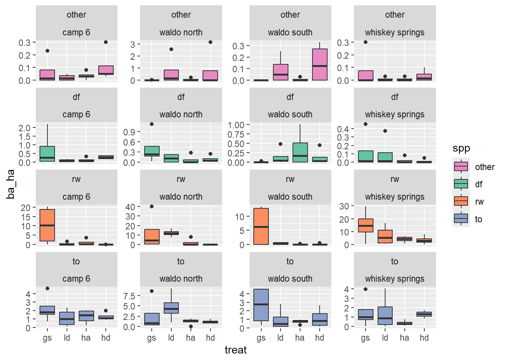
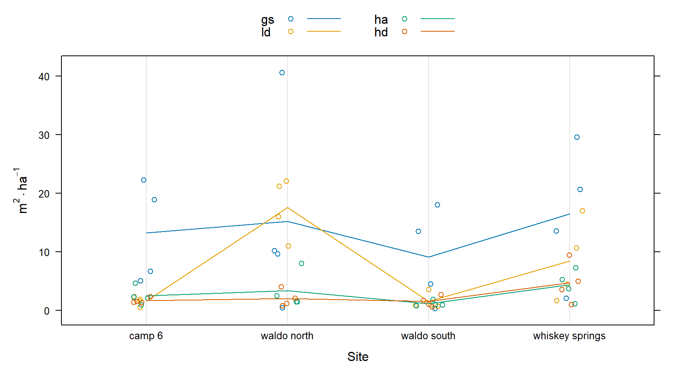
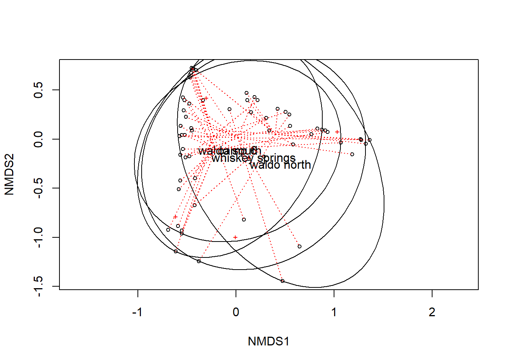
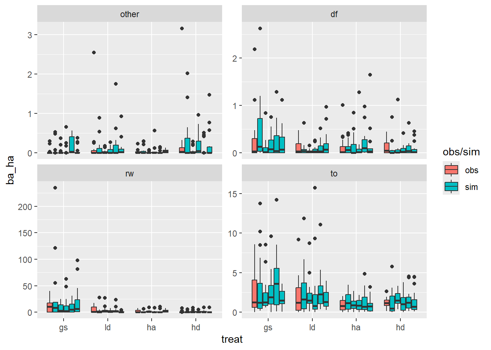

Code
library(tidyr)
library(tidyverse)
library(ggdist)
library(patchwork)
library(vegan)
library(glmmTMB)
library(DHARMa)
load("regen_wrangled.rda")library(tidyr)
library(tidyverse)
library(ggdist)
library(patchwork)
library(vegan)
library(glmmTMB)
library(DHARMa)
load("regen_wrangled.rda")Some functions and constants that I need later on, these might should get moved to their own function and sourced.
# The metric foresters constant: diameter in cm to area of a circle in square
# meters
for_const <- function(dbh) {
pi * dbh^2 / (4 * 10000)
}
# I need a mapping so that each species gets a unique color, I'll make this a
# function that takes a palette function from the scales package and returns a
# named vector
spp_col <- function(data, .palfun, ...) {
pal <- .palfun(...)
spp <- unique(data$spp)
purrr::set_names(pal(length(spp)), spp)
}This objective is somewhat vague because I am not familiar with the statistical techniques used for the weighted (diameter), multi-variate (species) distribution data that we have.
For starters, I will look at summaries of size class distributions by species. I will report densities in terms of trees per hectare (tph). Our plots were fixed area, 4-m-radius plots, or 50.27 m2. Each stem in a veg. plot represents 198.94 stems/ha. As shown in Figure 1.2, there are:
This plot is a little difficult to interpret beccause of the large difference in counts from the smallest to largest stems. It might make more sense to look at regen smaller than 5 cm separately.
# expansion factors at different aggregation levels
per_ha <- c(
all = 1 / 64,
treat = 1 / 16,
plot = 1 / 4,
corner = 1
) * (10000 / (16 * pi))
p <- regen |>
ggplot(aes(dbh, fill = spp)) +
stat_bin(aes(y = after_stat(count) * per_ha["treat"]), bins = 10) +
facet_wrap(vars(treat), nrow = 1) +
labs(y = expr(trees %.% ha^-1))
pSplitting the analysis at 5-cm-diameter stems shows a clear trend in treatments from most to least available light. Over this gradient, the number of 1.3-cm stems increases, and the 3.8-cm stems decrease, almost proportionally — and most of this is due to tanoak. For >= 5-cm stems, the effect is a fairly homogeneous decrease in the number of stems. There are few tanoak, Douglas-fir are only in the brightest areas. Mostly redwood (number of stems) shows a strong correlation with available light.
raw_hist2 <- function(group, bin_breaks, scale_breaks, text_pos) {
generate_facet_totals <- function(data) {
dplyr::summarize(data,
.by = treat,
n = paste("Total: ", round(n() * per_ha["treat"])),
)
}
colors <- spp_col(regen, scales::brewer_pal, palette = "Set2")
regen |>
filter({{ group }}) |>
ggplot2::ggplot(aes(dbh, fill = forcats::fct_reorder(spp, spp, length))) +
stat_bin(aes(y = after_stat(count) * per_ha["treat"]), breaks = bin_breaks) +
ggpp::geom_text_npc(
data = generate_facet_totals,
aes(npcx = "center", npcy = "top", label = n, fill = NULL)
) +
facet_wrap(vars(treat), nrow = 1) +
labs(y = expression(trees %.% ha^-1), x = "dbh (cm)", fill = "spp") +
scale_x_continuous(breaks = scale_breaks) +
scale_y_continuous(expand = expansion(c(0.05, 0.2))) +
scale_fill_manual(values = colors) +
theme_bw()
}
raw_hist2(dbh < 5, seq(0, 17.5, 2.5), seq(0, 15, 5), c(2.5, 6000)) /
raw_hist2(dbh >= 5, seq(0, 17.5, 2.5), seq(0, 15, 5), c(27, 600))Registered S3 methods overwritten by 'ggpp':
method from
heightDetails.titleGrob ggplot2
widthDetails.titleGrob ggplot2This is interesting, but I wonder what this would look like in terms of basal area, which is more biologically relevant than number of stems.
local({
bin_breaks <- seq(0, 17.5, 2.5)
scale_breaks <- seq(0, 15, 5)
facet_total_label <- function(data) {
summarize(data,
.by = treat,
ba_ha = round(sum(per_ha["treat"] * for_const(dbh)), 1)
)
}
regen |>
ggplot(aes(dbh, fill = forcats::fct_reorder(spp, dbh, .fun = ~sum(.x^2)))) +
stat_bin(aes(weight = per_ha["treat"] * for_const(dbh)), breaks = bin_breaks) +
ggpp::geom_text_npc(
data = facet_total_label,
mapping = aes(npcx = "center", npcy = "top", label = ba_ha, fill = NULL)
) +
facet_wrap(vars(treat), nrow = 1) +
labs(y = expr(m^2 %.% ha^-1), x = "dbh (cm)", fill = "spp") +
scale_y_continuous(expand = expansion(c(0.05, 0.2))) +
scale_x_continuous(breaks = scale_breaks) +
scale_fill_manual(
values = spp_col(regen, scales::brewer_pal, palette = "Set2")
) +
theme_bw()
})What I would like to know is, are there significant differences between treatments in terms of number of stems, or basal area each species and size class. For instance, a hypothetical result might be:
GS has 30% more redwood stems and 20% more redwood basal area than LD
The HD treatment resulted in more Douglas-fir than the LD and GS treatments
Above I visualize basal area by treatment, species, and size class. Here I’ll simplify and visualize just treatment and species.
# I'm expanding my data to ensure that any plot missing a species observation is
# recorded as zeros.
colors <- spp_col(regen, scales::brewer_pal, palette = "Set2")
regen |>
summarise(
.by = c(site, treat, plot, spp),
ba_ha = round(sum(per_ha["corner"] * for_const(dbh)), 2)
) |>
complete(nesting(site, treat, plot), spp, fill = list(ba_ha = 0)) |>
ggplot(aes(treat, ba_ha, fill = spp)) +
geom_boxplot() +
facet_wrap(~ spp, scales = "free_y") +
scale_fill_manual(values = colors)Here is another plot to get a better sense of what the data within treatment blocks looks like
regen |>
summarise(
.by = c(site, treat, plot, spp),
ba_ha = round(sum(per_ha["corner"] * for_const(dbh)), 2)
) |>
complete(nesting(site, treat, plot), spp, fill = list(ba_ha = 0)) |>
ggplot(aes(treat, ba_ha, fill = spp)) +
geom_boxplot() +
facet_wrap(~ spp + site, scales = "free_y") +
scale_fill_manual(values = colors)
While it’s not possible to include fully nested random effects using the adonis2 function, it seems important to try to include at least some accounting for grouping. I think site might be the most beneficial grouping level to capture because it captures differences in aspect, and also contains more observations than lower grouping levels.
I will start out by visualizing the differences associated with sites.
This first plot shows that the whiskey spring site has generally higher basal area and that the waldo n site has an especially high basal area for the just the ld treatment.
total_ba_ha <- regen |>
summarize(.by = c(site, treat, plot),
ba_ha = round(sum(per_ha["corner"] * for_const(dbh)), 2)
)
dotplot(
ba_ha ~ treat,
total_ba_ha,
groups = site,
type = c("p", "a"),
xlab = "Treatment",
ylab = expression(m^2%.%ha^-1),
auto.key = list(columns = 2, lines = TRUE),
jitter.x = TRUE
)This figure shows that the site:treatment interaction is likely significant. There are similar trends across sites, but their magnitude is different depending on treatment.
dotplot(
ba_ha ~ site,
total_ba_ha,
groups = treat,
type = c("p", "a"),
xlab = "Site",
ylab = expression(m^2%.%ha^-1),
auto.key = list(columns = 2, lines = TRUE),
jitter.x = TRUE
)
Next, I’ll prepare the species data for analysis
ba_ha <- regen |>
summarise(
.by = c(site, treat, plot, spp),
ba_ha = round(sum(per_ha["corner"] * for_const(dbh)), 2)
) |>
pivot_wider(names_from = spp, values_from = ba_ha) |>
mutate(across(where(is.double), ~ replace_na(.x, 0)))I took these from the help for adonis2, I’m not quite sure what aspect of the data they are showing yet.
mod <- metaMDS(ba_ha[c("rw", "to", "df", "other")], trace = FALSE)
plot(mod)
ordiellipse(mod, ba_ha$site, kind = "ehull", label = TRUE)
ordispider(mod, ba_ha$site, lty = 3, col = "red")
In the following models, the strata argument is used to: “Constrain perumtations within groups.” The first two models don’t include the site as strata.
When I include site as a fixed effect, p-values increase slightly.
perms <- 500
adonis2(
ba_ha[c("rw", "to", "df", "other")] ~ treat,
data = ba_ha,
permutations = perms
)Permutation test for adonis under reduced model
Permutation: free
Number of permutations: 500
adonis2(formula = ba_ha[c("rw", "to", "df", "other")] ~ treat, data = ba_ha, permutations = perms)
Df SumOfSqs R2 F Pr(>F)
Model 3 2.1777 0.13288 3.0649 0.003992 **
Residual 60 14.2104 0.86712
Total 63 16.3881 1.00000
---
Signif. codes: 0 '***' 0.001 '**' 0.01 '*' 0.05 '.' 0.1 ' ' 1adonis2(
ba_ha[c("rw", "to", "df", "other")] ~ site + treat,
data = ba_ha,
permutations = perms
)Permutation test for adonis under reduced model
Permutation: free
Number of permutations: 500
adonis2(formula = ba_ha[c("rw", "to", "df", "other")] ~ site + treat, data = ba_ha, permutations = perms)
Df SumOfSqs R2 F Pr(>F)
Model 6 4.2279 0.25799 3.303 0.001996 **
Residual 57 12.1602 0.74201
Total 63 16.3881 1.00000
---
Signif. codes: 0 '***' 0.001 '**' 0.01 '*' 0.05 '.' 0.1 ' ' 1If I put site in strata, I get similar results.
adonis2(
ba_ha[c("rw", "to", "df", "other")] ~ treat,
data = ba_ha,
strata = ba_ha$site,
permutations = perms
)Permutation test for adonis under reduced model
Blocks: strata
Permutation: free
Number of permutations: 500
adonis2(formula = ba_ha[c("rw", "to", "df", "other")] ~ treat, data = ba_ha, permutations = perms, strata = ba_ha$site)
Df SumOfSqs R2 F Pr(>F)
Model 3 2.1777 0.13288 3.0649 0.001996 **
Residual 60 14.2104 0.86712
Total 63 16.3881 1.00000
---
Signif. codes: 0 '***' 0.001 '**' 0.01 '*' 0.05 '.' 0.1 ' ' 1If I include the interaction of site:treatment as a fixed effect, it is not significant.
with(ba_ha, adonis2(
cbind(rw, to, df, other) ~ site + site:treat + treat,
permutations = perms
))Permutation test for adonis under reduced model
Permutation: free
Number of permutations: 500
adonis2(formula = cbind(rw, to, df, other) ~ site + site:treat + treat, permutations = perms)
Df SumOfSqs R2 F Pr(>F)
Model 15 6.1261 0.37381 1.9103 0.007984 **
Residual 48 10.2620 0.62619
Total 63 16.3881 1.00000
---
Signif. codes: 0 '***' 0.001 '**' 0.01 '*' 0.05 '.' 0.1 ' ' 1I think we can safely conclude that ther are some significant differences in basal are composition (I assume at the alpha = 0.05 level) between treatments.
Next, we might consider where these differences (in abundance defined as basal area) are.
We could ask about:
I will be focussing on the latter which is in keeping with the theme of the rest of my analysis. These differences have already been visualized above in Figure 11.1.
Again, I’m making zero observations explicit, effectively making our data presence-absence, rather than presence only.
regen_pa <- regen |>
summarize(.by = c(site, treat, plot, spp),
ba_ha = round(sum(per_ha["corner"] * for_const(dbh)), 2)
) |>
complete(nesting(site, treat, plot), spp, fill = list(ba_ha = 0))
regen_po <- regen |>
summarize(.by = c(site, treat, plot, spp),
ba_ha = round(sum(per_ha["corner"] * for_const(dbh)), 2)
)So, perhaps with our 16 observations per species/treatment, we can detect some differences in basal area with a multi-level model that accounts for non-independence of our sampling design.
library(emmeans)Warning: package 'emmeans' was built under R version 4.3.3Welcome to emmeans.
Caution: You lose important information if you filter this package's results.
See '? untidy'm1 <- glmmTMB(ba_ha ~ treat * spp + (1 | site/treat/plot), regen_pa)
res1 <- simulateResiduals(m1)
plot(res1)qu = 0.25, log(sigma) = -3.580392 : outer Newton did not converge fully.qu = 0.25, log(sigma) = -3.926303 : outer Newton did not converge fully.qu = 0.25, log(sigma) = -3.931632 : outer Newton did not converge fully.m2 <- glmmTMB(
ba_ha ~ treat * spp + (1 | site/treat),
regen_pa,
dispformula = ~ spp
)
res2 <- simulateResiduals(m2)
plot(res2)m3 <- glmmTMB(
ba_ha ~ treat * spp + (1 | site/treat),
regen_pa,
family = ziGamma(link = "log"),
dispformula = ~ spp,
ziformula = ~ spp
)
plot(simulateResiduals(m3))
m4 <- glmmTMB(
ba_ha ~ treat * spp + (1 | site/treat),
regen_pa,
family = ziGamma(link = "log"),
dispformula = ~ spp + treat,
ziformula = ~ spp
)
res4 <- simulateResiduals(m4)
plot(res4)plotResiduals(res4, form = regen_pa$spp)plotResiduals(res4, form = regen_pa$treat)plotResiduals(res4, form = interaction(regen_pa$treat, regen_pa$spp))m5 <- glmmTMB(
ba_ha ~ treat * spp + (1 | site:spp),
regen_pa,
family = ziGamma(link = "log"),
dispformula = ~ spp,
ziformula = ~ spp
)
plot(simulateResiduals(m5))AIC(m1, m2, m3, m4, m5) df AIC
m1 20 1408.0527
m2 22 848.3301
m3 26 647.9944
m4 29 649.8549
m5 25 642.8537Select this model
mba <- m3Model three is the simplest, has the lowest AIC and has well-behaved residuals.
Here I plot some simulations from this model to see if it generates plausible data.
regen_pa |>
mutate(simulate(mba, nsim = 5)) |>
rename(obs = ba_ha) |>
pivot_longer(where(is.double), names_to = "type", values_to = "ba_ha") |>
ggplot(aes(
treat, ba_ha, # fill = type
group = interaction(type, treat),
fill = forcats::fct_collapse(type, sim = paste0("sim_", 1:5))
)) +
geom_boxplot() +
facet_wrap(~ spp, scales = "free_y") +
labs(fill = "obs/sim")
Finally, significant differences?
We’d expect 5 times as much basal area of other species in LD compared to HA, and interestingly, 6 times more other species basal area in HD compared to HA.
We expect 5 times more redwood regen basal area in GS compared to HA, and 7 times compared to HD.
For tanoak, we expect about twice as much regeneration basal area in the GS treatment compared to HA.
emmeans(mba, c("spp", "treat"), by = "spp", type = "response") |>
plot(comparisons = TRUE, plotit = FALSE) |> as_tibble() |>
ggplot(aes(treat, the.emmean)) +
facet_wrap(~ spp, scales = "free", labeller = plot_labels) +
geom_linerange(
aes(ymin = asymp.LCL, ymax = asymp.UCL),
color = "gray70",
linewidth = 2.3,
show.legend = FALSE
) +
geom_segment(
aes(xend = treat, yend = rcmpl),
color = "#4444d1",
lineend = "butt",
linejoin = "bevel",
arrow = arrow(length = grid::unit(2.5, "mm")),
linewidth = 1
) +
geom_segment(
aes(xend = treat, yend = lcmpl),
color = "#4444d1",
lineend = "butt",
linejoin = "bevel",
arrow = arrow(length = grid::unit(2.5, "mm")),
linewidth = 1
) +
geom_point(color = "black", size = 2) +
labs(x = "Treatment", y = expression(Basal ~ Area ~ (m^2%.%ha^-1))) +
scale_x_discrete(labels = toupper)Warning: Removed 1 row containing missing values or values outside the scale range
(`geom_segment()`).
Removed 1 row containing missing values or values outside the scale range
(`geom_segment()`).
Removed 1 row containing missing values or values outside the scale range
(`geom_segment()`).
Removed 1 row containing missing values or values outside the scale range
(`geom_segment()`).
Removed 1 row containing missing values or values outside the scale range
(`geom_segment()`).
Removed 1 row containing missing values or values outside the scale range
(`geom_segment()`).
Removed 1 row containing missing values or values outside the scale range
(`geom_segment()`).
Removed 1 row containing missing values or values outside the scale range
(`geom_segment()`).emmeans(mba, c("spp", "treat"), by = "spp", type = "response") |>
contrast("pairwise") |>
as_tibble() |>
filter(p.value < 0.05) |>
relocate(spp)# A tibble: 5 × 8
spp contrast ratio SE df null z.ratio p.value
<fct> <fct> <dbl> <dbl> <dbl> <dbl> <dbl> <dbl>
1 other ld / ha 5.64 3.61 Inf 1 2.71 0.0342
2 other ha / hd 0.164 0.0984 Inf 1 -3.01 0.0139
3 rw gs / ha 5.00 2.91 Inf 1 2.76 0.0296
4 rw gs / hd 6.78 4.35 Inf 1 2.98 0.0151
5 to gs / ha 2.39 0.767 Inf 1 2.70 0.0346For Douglas-fir in particular, we are interested in the counts of stems more than the basal area. This, requires another model. A counts model.
Heres the raw counts. There doesn’t appear to be any treatment differences in the number of Douglas-fir seedlings per plot.
regen_df <- regen |>
count(site, treat, plot, spp) |>
complete(nesting(site, treat, plot), spp, fill = list(n = 0)) |>
filter(spp == "df")
regen_df |>
ggplot(aes(treat, n * per_ha["corner"])) +
geom_boxplot() +
labs(x = "Treatment", y = expression(Stems %.% ha^-1))
A negative binomial model seems to fit acceptably when modeling raw counts (not TPH). I was not able to achive model convergence with the specification of zero inflation or dispersion formulae.
m1 <- glmmTMB(
n ~ treat + (1 | site / treat),
regen_df,
family = nbinom1()
)
res1 <- simulateResiduals(m1)
plot(res1)Select this model
mdf <- m1There are no statistically detectable differences
emmeans(m1, "treat") treat emmean SE df asymp.LCL asymp.UCL
gs 0.704 0.416 Inf -0.111 1.52
ld 0.509 0.433 Inf -0.340 1.36
ha 0.608 0.434 Inf -0.242 1.46
hd 0.983 0.390 Inf 0.219 1.75
Results are given on the log (not the response) scale.
Confidence level used: 0.95 The model for Douglas-fir seedling counts does not result in any statistically significant differences between treatments. Generally, we expect about six seedlings per 4-meter-radius plot, or 1,000 to 1,400 seedling per hectare.
emmeans(m1, "treat") |>
contrast("pairwise") |>
as_tibble() |>
tinytable::tt()| contrast | estimate | SE | df | z.ratio | p.value |
|---|---|---|---|---|---|
| gs - ld | 0.19546011 | 0.4004914 | Inf | 0.4880507 | 0.9617809 |
| gs - ha | 0.09613691 | 0.4132590 | Inf | 0.2326311 | 0.9955689 |
| gs - hd | -0.27803131 | 0.3680676 | Inf | -0.7553812 | 0.8743937 |
| ld - ha | -0.09932320 | 0.4261828 | Inf | -0.2330531 | 0.9955450 |
| ld - hd | -0.47349142 | 0.3842515 | Inf | -1.2322436 | 0.6062714 |
| ha - hd | -0.37416822 | 0.3949796 | Inf | -0.9473103 | 0.7792439 |
Save data from this page for future use
save(
regen,
spp_col,
per_ha,
for_const,
mba,
regen_pa,
mdf,
regen_df,
file = "regen_visualize.rda"
)